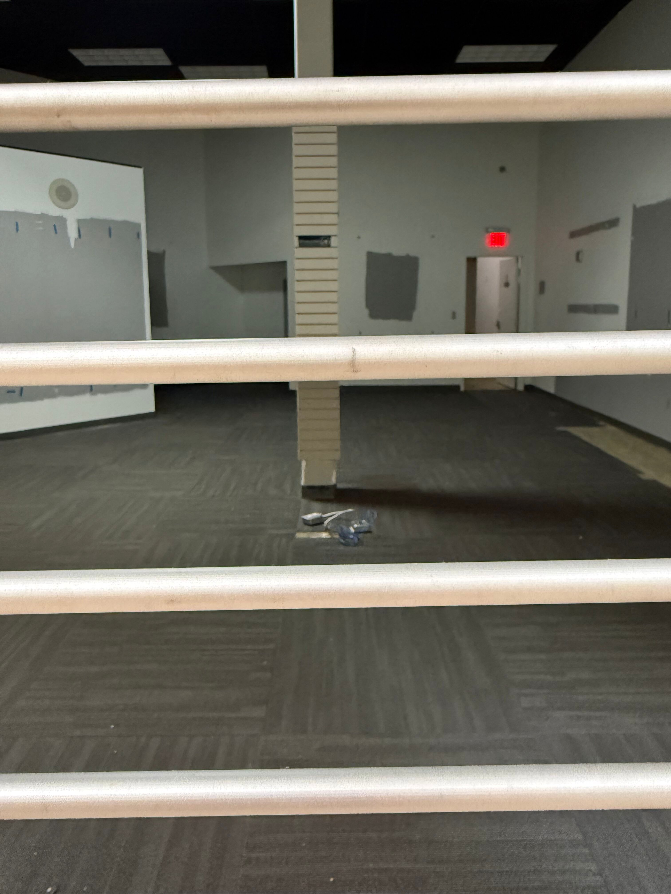

Notes
It's been a long march back, getting to the point where I have a full and functional music production stack, but I think I'm finally here? This track is the culmination of six months or so of nudging myself back into a place where music feels fun and natural to make, where I'm not constantly second guessing myself or getting derailed while setting up equipment, or running out of time, or running out of inspiration. I kind of fooled myself into this by focusing on the technological side of everything: first learning about modular synthesis (again, maybe for the third time) in VCV Rack Pro, then building a DIY semi-modular synth (the Shmoerg Moduleur), then reviving my trusty Prophet 600 and getting it working well, then acquiring and rehabbing a Juno-106, and finally acquiring a Eurorack sequencer that seemed to put all the pieces together.
I've never liked composing in Ableton for whatever reason. Just sitting in front of the computer makes it hard to get in the musical context, and even though I have the Akai APC-40 that makes it possible to mostly control Ableton without breaking out of the musical flow, it's never fully gelled for me. Maybe someday, but until then I have this Eloquencer sequencer from Winter Modular that makes it so much more immediate. I built the bones of this track (the Moduleur "bassline" and the Juno stringlike pads) in the Eloquencer, adding a stepped LFO to control a CV for the Moduleur's filter, and then added a TR-707 drum track. The Eloquencer has proper song creation, where you can chain patterns together and build song parts up into full songs, something I've always wanted -- it meshes with the way I've always put songs together. The TR-707 has something really similar (track writing) so I wrote A, B, and C parts, banged out a rough arrangement with Ableton, and then figured out exactly which patterns I'd need to put together to build the song in both the 707 and the Eloquencer.
Once the sequences were set, I could focus on performance for the parts, which for a synth driven by a sequencer just means twiddling knobs to change envelopes and cutoff frequencies and whatnot. It sounds so basic, but this has been a missing piece of the puzzle for me for as long as I've been trying to make synthesized music. I've never been able to figure out how to play the piece and adjust parameters of the sound at the same time. DAW automation has never clicked for me, but simply mapping out the structure of the song and then performing it - just as you would with acoustic instruments! - made perfect sense. Hopefully this is a strategy I can continue to refine and improve because it worked well.
I focused more heavily on mixing this time around too, after realizing that I had a bunch of Native Instruments and UAD plugins that I'd purchased years ago but never migrated over to this new desktop PC. I like where things landed with this... it doesn't sound flat or dry at least. It's opinionated and I like that about it.
Side note: I took a few hours yesterday to tune the filters in the Moduleur, something I'd never bothered to do. They're working so much better now! It was mostly a matter of switching a jumper to bridge two different pins so that the control voltages could swing between +/- 12V rather than 12V and GND. The filters never seemed effective and now I know why!